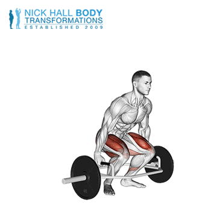

Trap bar deadlift je različica deadlifta. Pri tej vaji uporabnik dviguje ogrodje (na vsaki strani drži ročaj ogrodja v širini boka). Dvig je podoben dvigu s palico, vendar omogoča bolj naravno držo in manj obremenjuje hrbtenico. Glavne mišice, ki sodelujejo pri tej vaji, so stegenske mišice, zadnje stegenske mišice, zadnjica in spodnji del hrbta.
Stojte v notranjosti ogrodja. Stojte v širini ramen s stopali obrnjenimi naravnost naprej. Počepnite in pri tem ohranjajte hrbet raven in prsni koš dvignjen. Primite ročaje na vsaki strani ogrodja. Potegnite lopatice navzdol. Napnite jedro in potisnite težo skozi noge, medtem ko dvigujete palico s tal. Ko dvigujete palico, se bodo boki in ramena dvignili, hrbet naj ostane raven. Spustite palico nazaj na tla, pri tem pa jo držite čim bližje nogam.
Trajanje: minut
Kalorije: kcal
Vrsta:
Težavnost:
Kratek opis: